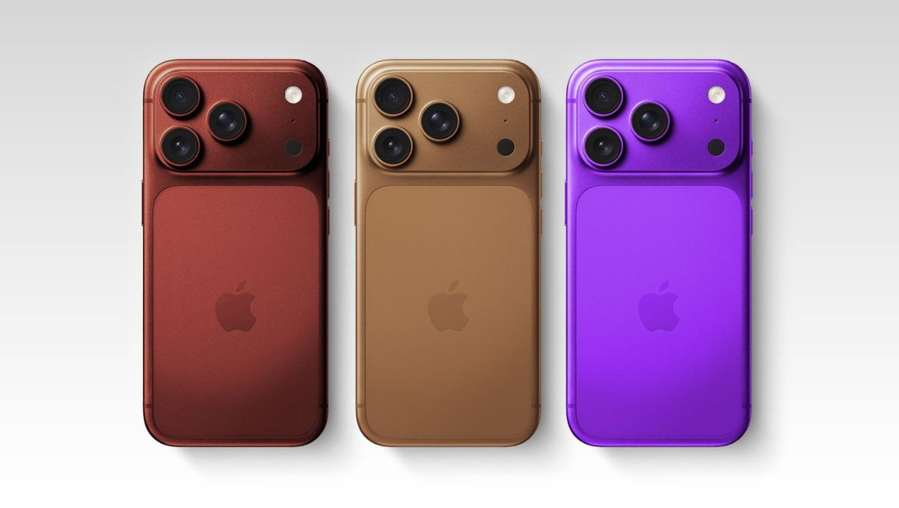

iPhone 18 Pro – Nowy standard smartfonów

Opublikowano: 12 stycznia 2026
Design i wyświetlacz
iPhone 18 Pro prezentuje zupełnie nowy design z niemal bezramkowym ekranem OLED o rozdzielczości 3200×1440 px. Ekran wspiera adaptacyjną częstotliwość odświeżania 1–240 Hz, HDR10+ oraz Dolby Vision.
- Wytrzymałe szkło Ceramic Shield 2.0.
- Nowa konstrukcja tylnej obudowy z ultralekkiego stopu tytanu.
- Odporność na wodę i kurz IP68+
Nowy chip A20 Neural Fusion
Serce iPhone’a 18 Pro stanowi procesor **A20 Neural Fusion**, który łączy CPU, GPU i dedykowany układ AI w jednym chipie. Dzięki temu możliwe są:
- Błyskawiczne przetwarzanie zdjęć i wideo w czasie rzeczywistym.
- Rozszerzona rzeczywistość (AR) i gry z wykorzystaniem AI.
- Lepsza wydajność przy minimalnym zużyciu energii.
Aparaty i funkcje fotograficzne
System aparatów został całkowicie przeprojektowany – tylne trzy obiektywy wspierają nagrywanie w 8K, a frontowy TrueDepth 2.0 umożliwia realistyczny AR i FaceID w każdych warunkach.
- Nowy tryb „Pro Cinematic AI” do nagrywania filmów w profesjonalnej jakości.
- AI Photoboost – automatyczne poprawki ekspozycji, kolorów i kontrastu.
- HDR10+ i Dolby Vision w nagraniach wideo.
Bateria i ładowanie
- Bateria wystarcza na 48 godzin intensywnego użytkowania.
- Ładowanie bezprzewodowe MagSafe 2 o mocy 50W.
- Nowa funkcja szybkiego ładowania przewodowego 120W.
Oprogramowanie i AI
iOS 21 w połączeniu z chipem A20 Neural Fusion umożliwia wykorzystanie AI w każdej aplikacji – od kamery, przez gry, po narzędzia produktywności.
- Inteligentne sugestie i automatyzacje.
- Personalizacja interfejsu i aplikacji.
- Lepsze zarządzanie energią i pamięcią.
Dlaczego warto kupić iPhone 18 Pro?
- Nowoczesny design i ekran klasy premium.
- Mocny i energooszczędny chip A20 Neural Fusion.
- Profesjonalne funkcje foto/video.
- Integracja AI w codziennej pracy i rozrywce.
- Ekosystem Apple – synchronizacja z iPad, Mac i Apple Watch.
← Wróć na stronę główną
Źródła / bibliografia